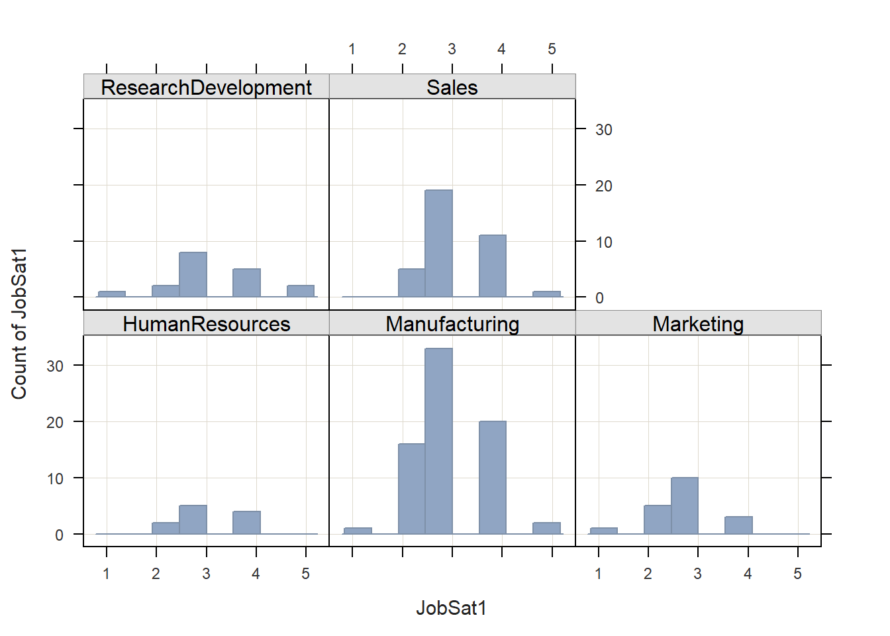
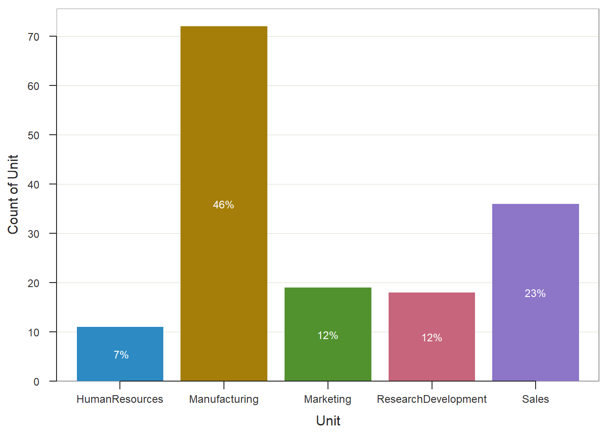

Chapter 20 Aggregating & Segmenting Data
Aggregation refers to the process of reporting data at a higher level of analysis, where level of analyses might include teams, units, facilities, locations, or organization levels. In many instances, we report aggregate results (e.g., mean, standard deviation, counts) based on an entire sample drawn from a larger population; however, in some instances, we might wish to create a new variable within a data frame that represents descriptive (i.e., summary) statistics for a clusters of cases (e.g., teams of employees), as we might be interested in understanding subsamples. In other instances, we might aggregate data to a higher level of analysis because we are interested in analyzing associations or differences at that higher level. For example, we might aggregate employees’ engagement scores to the unit level in order to analyze whether significant differences in unit-level employee engagement exist.
Sometimes the process of summarizing a variable by groups is referred to as segmentation. For example, after acquiring performance data for employees, we may wish to create a new variable that represents the average (i.e., mean) level of performance for each work team’s employees. It is important to note that aggregation does not always imply measures of central tendency like the mean, median, or mode; rather, we can summarize clusters of data in other ways, such as by the minimum or maximum value within a cluster of cases (e.g., performance of worst performing team member), the number of cases within a cluster (e.g., number of members of a team), or the dispersion (i.e., spread) of variable values for each cluster (e.g., standard deviation of performance values for members of a team). In terms of measurement scale, a grouping variable will typically be nominal or ordinal (i.e., categorical).
20.0.0.1 Video Tutorial
As usual, you have the choice to follow along with the written tutorial in this chapter or to watch the video tutorial below.
Link to Video Tutorial: https://youtu.be/EdfeRpQtF20
20.0.0.2 Functions & Packages Introduced
| Function | Package |
|---|---|
group_by |
dplyr |
summarize |
dplyr |
n |
dplyr |
n_distinct |
dplyr |
mean |
base R |
sd |
base R |
median |
base R |
var |
base R |
min |
base R |
max |
base R |
mutate |
dplyr |
ungroup |
dplyr |
str |
base R |
as.data.frame |
base R |
Histogram |
lessR |
BarChart |
dplyr |
20.0.0.3 Initial Steps
If you haven’t already, save the file called “EmployeeSurveyData.csv” into a folder that you will subsequently set as your working directory. Your working directory will likely be different than the one shown below (i.e., "H:/RWorkshop"). As a reminder, you can access all of the data files referenced in this book by downloading them as a compressed (zipped) folder from the my GitHub site: https://github.com/davidcaughlin/R-Tutorial-Data-Files; once you’ve followed the link to GitHub, just click “Code” (or “Download”) followed by “Download ZIP”, which will download all of the data files referenced in this book. For the sake of parsimony, I recommend downloading all of the data files into the same folder on your computer, which will allow you to set that same folder as your working directory for each of the chapters in this book.
Next, using the setwd function, set your working directory to the folder in which you saved the data file for this chapter. Alternatively, you can manually set your working directory folder in your drop-down menus by going to Session > Set Working Directory > Choose Directory…. Be sure to create a new R script file (.R) or update an existing R script file so that you can save your script and annotations. If you need refreshers on how to set your working directory and how to create and save an R script, please refer to Setting a Working Directory and Creating & Saving an R Script.
# Set your working directory
setwd("H:/RWorkshop")Next, read in the .csv data file called “EmployeeSurveyData.csv” using your choice of read function. In this example, I use the read_csv function from the readr package (Wickham and Hester 2020). If you choose to use the read_csv function, be sure that you have installed and accessed the readr package using the install.packages and library functions. Note: You don’t need to install a package every time you wish to access it; in general, I would recommend updating a package installation once ever 1-3 months. For refreshers on installing packages and reading data into R, please refer to Packages and Reading Data into R.
# Install readr package if you haven't already
# [Note: You don't need to install a package every
# time you wish to access it]
install.packages("readr")# Access readr package
library(readr)
# Read data and name data frame (tibble) object
EmpSurvData <- read_csv("EmployeeSurveyData.csv")##
## -- Column specification ----------------------------------------------------------------------------------------------------
## cols(
## EmployeeID = col_character(),
## Unit = col_character(),
## Supervisor = col_character(),
## JobSat1 = col_double(),
## JobSat2 = col_double(),
## JobSat3 = col_double(),
## TurnInt1 = col_double(),
## TurnInt2 = col_double(),
## TurnInt3 = col_double(),
## Engage1 = col_double(),
## Engage2 = col_double(),
## Engage3 = col_double(),
## Engage4 = col_double(),
## Engage5 = col_double(),
## ExpIncivil1 = col_double(),
## ExpIncivil2 = col_double(),
## ExpIncivil3 = col_double(),
## ExpIncivil4 = col_double(),
## ExpIncivil5 = col_double()
## )# Print the names of the variables in the data frame (tibble) objects
names(EmpSurvData)## [1] "EmployeeID" "Unit" "Supervisor" "JobSat1" "JobSat2" "JobSat3" "TurnInt1" "TurnInt2"
## [9] "TurnInt3" "Engage1" "Engage2" "Engage3" "Engage4" "Engage5" "ExpIncivil1" "ExpIncivil2"
## [17] "ExpIncivil3" "ExpIncivil4" "ExpIncivil5"# Print data frame (tibble) objects
print(EmpSurvData)## # A tibble: 156 x 19
## EmployeeID Unit Supervisor JobSat1 JobSat2 JobSat3 TurnInt1 TurnInt2 TurnInt3 Engage1 Engage2 Engage3 Engage4 Engage5
## <chr> <chr> <chr> <dbl> <dbl> <dbl> <dbl> <dbl> <dbl> <dbl> <dbl> <dbl> <dbl> <dbl>
## 1 EID294 Marketi~ EID373 3 3 3 3 3 3 2 1 2 2 3
## 2 EID295 Marketi~ EID373 2 3 2 3 4 2 2 1 3 3 3
## 3 EID296 Marketi~ EID373 2 2 3 3 3 3 1 1 2 1 2
## 4 EID301 Marketi~ EID367 2 2 3 4 4 4 3 2 3 2 2
## 5 EID306 Marketi~ EID367 2 2 2 4 4 4 3 2 3 4 3
## 6 EID213 HumanRe~ EID370 4 3 4 3 3 3 3 2 4 3 3
## 7 EID217 HumanRe~ EID370 3 3 2 3 2 2 3 2 3 3 4
## 8 EID254 Manufac~ EID371 4 4 4 2 2 2 3 2 3 3 2
## 9 EID260 Manufac~ EID371 3 4 4 2 2 2 3 2 2 1 2
## 10 EID315 Researc~ EID372 3 2 3 2 2 2 2 2 3 4 2
## # ... with 146 more rows, and 5 more variables: ExpIncivil1 <dbl>, ExpIncivil2 <dbl>, ExpIncivil3 <dbl>, ExpIncivil4 <dbl>,
## # ExpIncivil5 <dbl>The data for this exercise include employees’ unique identifiers (EmployeeID), the unit they work in (unit), their direct supervisor (Supervisor), and annual employee survey responses to three job satisfaction items (JobSat1, JobSat2_rev, JobSat3), three turnover intentions items (TurnInt1, TurnInt2, TurnInt3), five engagement items (Engage1, Engage2, Engage3, Engage4, Engage5), and five exposure to incivility items (ExpIncivil1, ExpIncivil2, ExpIncivil3, ExpIncivil4, ExpIncivil5_rev). All response scales are 5 points, ranging from strongly disagree (1) to strongly agree (5).
20.1 Counts By Group
Let’s begin by learning how to summarize data in aggregate. When we don’t have any grouping variables of interest, we can simply compute descriptive statistics, such as the mean, standard deviation, or count for each variable of interest, and this will compute the descriptive statistics at the sample level. For our purposes, however, we will summarize data in accordance with a grouping (i.e., clustering) variable, which will yield aggregate estimates for each group. Specifically, we will summarize how many employees (who responded to the engagement survey) work in each unit.
To do so, we will use the group_by, summarize, n, and n_distinct functions from the dplyr package (Wickham et al. 2021), so if you haven’t already, be sure to install and access that package before proceeding.
# Install dplyr package if not already installed
install.packages("dplyr")# Access dplyr package
library(dplyr)I will demonstrate two approaches for applying the group_by, summarize, n, and n_distinct functions from dplyr. The first option uses “pipe(s),” which in R is represented by the %>% operator. The pipe operator comes from a package called magrittr (Bache and Wickham 2020), on which the dplyr is partially dependent. In short, a pipe allows one to code more efficiently and to improve the readability of an overall script under certain conditions. Specifically, a pipe forwards the result or value of one object or expression to a subsequent function. In doing so, one can avoid writing functions in which other functions are nested parenthetically. The second option is more traditional and lacks the efficiency and readability of pipes. You can use either approach, and if don’t you want to use pipes, skip to the section below called Without Pipes. For more information on the pipe operator, check out this link: https://r4ds.had.co.nz/pipes.html.
20.1.1 With Pipes
Using an approach with pipes, first, we need to type the name of our data frame, which we previously named EmpSurvData, followed by the pipe (%>%) operator. This will “pipe” our data frame into the subsequent function. Second, either on the same line or on the next line, type the group_by function, and within the parentheses, enter Unit as the argument to indicate that we want to group the data by the organizational unit membership variable. Follow this function with another pipe (%>%) operator in order to pipe the results of the group_by function to the subsequent function. Third, type the summarize function, and within the parentheses, type a new name (of your choosing) for a variable that will contain the number (count) of employees within each organizational unit (UnitCount), and follow that with the = operator and an empty n function (i.e., nothing typed in the parentheses). The summarize function is most commonly used to describe/summarize data in some way (e.g., counts) that has been aggregated by the group_by function. The n function can be used within the summarize function to count the number of cases per group.
# Counts by groups - n function (with pipes)
EmpSurvData %>%
group_by(Unit) %>%
summarize(UnitCount = n())## # A tibble: 5 x 2
## Unit UnitCount
## <chr> <int>
## 1 HumanResources 11
## 2 Manufacturing 72
## 3 Marketing 19
## 4 ResearchDevelopment 18
## 5 Sales 36Of note, we could arrive at the same output by using the n_distinct function instead of the n function. The n_distinct function quickly counts the number of unique values (e.g., EID294, EID295) in a variable (e.g., EmployeeID), and when preceded by the group_by function, it counts the number of unique values within each group. The n_distinct function is really handy when unique entities (e.g., employees) each have multiple rows of data, which (depending on how your data are structured) could be the case if you were to have a long-format data frame containing multiple survey administrations for employees over time. Using the function can reveal how many unique employees there are, even when some employees have multiple rows of data. In sum, the n function counts the number of cases (i.e., rows), and the n_distinct function counts the number of unique values.
# Counts by groups - n_distinct function (with pipes)
EmpSurvData %>%
group_by(Unit) %>%
summarize(UnitCount = n_distinct(EmployeeID))## # A tibble: 5 x 2
## Unit UnitCount
## <chr> <int>
## 1 HumanResources 11
## 2 Manufacturing 72
## 3 Marketing 19
## 4 ResearchDevelopment 18
## 5 Sales 3620.1.2 Without Pipes
We can achieve the same output as above without using the pipe (%>%) operator. To begin, type the name of the summarize function. As the first argument, enter the data object we wish to summarize group_by(EmpSurvData, Unit). Specifically, use the group_by function with the name of our data frame (EmpSurvData) as the first argument and the name of the grouping variable as the second argument (Unit). Doing this informs the summarize function that the cases of interest is grouped by membership in the Unit variable. As the second argument, type a new name for a variable that will contain the number (count) of employees within each organizational unit (UnitCount), and follow that with the = operator and an empty n function (i.e., nothing typed in the parentheses).
# Counts by groups - n function (without pipes)
summarize(group_by(EmpSurvData, Unit), UnitCount = n())## # A tibble: 5 x 2
## Unit UnitCount
## <chr> <int>
## 1 HumanResources 11
## 2 Manufacturing 72
## 3 Marketing 19
## 4 ResearchDevelopment 18
## 5 Sales 36Similarly, we can apply the n_distinct function without pipes.
# Counts by groups - n_distinct function (without pipes)
summarize(group_by(EmpSurvData, Unit), UnitCount = n_distinct(EmployeeID))## # A tibble: 5 x 2
## Unit UnitCount
## <chr> <int>
## 1 HumanResources 11
## 2 Manufacturing 72
## 3 Marketing 19
## 4 ResearchDevelopment 18
## 5 Sales 3620.2 Measures of Central Tendency and Dispersion By Group
We can also aggregate data by computing the average of a variable for each group. Because measures of central tendency (e.g., mean, median) and dispersion (e.g., standard deviation, interquartile range) are estimated for continuous variables (i.e., variables with interval or ratio measurement scale), we will choose continuous variables that we wish to summarize in aggregate. In this example, we will treat the JobSat1 and JobSat2 variables as continuous (even though they would best be described as having an ordinal measurement scale), and we will use organizational unit (Unit) as our grouping variable. We’ll learn two approaches for doing so: using the pipe (%>%) operator and without using the pipe (%>%) operator.
20.2.1 With Pipes
Let’s begin by calculating the mean of JobSat1 for each value of the Unit variable.
Using pipes, first, type the name of the data frame, which we previously named EmpSurvData, followed by the pipe (%>%) operator. Second, type the name of the group_by function, and within the parentheses, type Unit as the sole argument to indicate that we want to group the data by the organizational unit membership variable. Follow this function with another pipe (%>%) operator. Third, type the name of the summarize function, and within the parentheses, type a new name (of your choosing) for a variable that will contain the the mean JobSat1 score for each organizational unit (Mean_JobSat1), and follow that with the = operator. After the = operator, type the name of the mean function from base R, and within it, type the name of our variable of interest (JobSat1) as the first argument; as the second argument, type na.rm=TRUE, which instructs R to exclude missing values for JobSat1 when computing the mean.
# Means by group (with pipes)
EmpSurvData %>%
group_by(Unit) %>%
summarize(Mean_JobSat1 = mean(JobSat1, na.rm=TRUE))## # A tibble: 5 x 2
## Unit Mean_JobSat1
## <chr> <dbl>
## 1 HumanResources 3.18
## 2 Manufacturing 3.08
## 3 Marketing 2.79
## 4 ResearchDevelopment 3.28
## 5 Sales 3.22We can extend our code by estimating the unit-level means and standard deviations for JobSat1 and JobSat2 variables by using the mean and sd base R functions.
# Means & SDs by group (with pipes)
EmpSurvData %>%
group_by(Unit) %>%
summarize(
Mean_JobSat1 = mean(JobSat1, na.rm=TRUE),
SD_JobSat1 = sd(JobSat1, na.rm=TRUE),
Mean_JobSat2 = mean(JobSat2, na.rm=TRUE),
SD_JobSat2 = sd(JobSat2, na.rm=TRUE)
)## # A tibble: 5 x 5
## Unit Mean_JobSat1 SD_JobSat1 Mean_JobSat2 SD_JobSat2
## <chr> <dbl> <dbl> <dbl> <dbl>
## 1 HumanResources 3.18 0.751 3 0.447
## 2 Manufacturing 3.08 0.818 3.32 0.819
## 3 Marketing 2.79 0.787 2.89 0.737
## 4 ResearchDevelopment 3.28 1.02 3.17 0.924
## 5 Sales 3.22 0.722 3.36 0.723In addition to the mean and sd functions from base R, we could also apply the base R functions for median (median), variance (var), minimum (min), maximum (max), and interquartile range (IQR).
# Multiple descriptive statistics by group (with pipes)
EmpSurvData %>%
group_by(Unit) %>%
summarize(
Mean_JobSat1 = mean(JobSat1, na.rm=TRUE),
SD_JobSat1 = sd(JobSat1, na.rm=TRUE),
Mdn_JobSat1 = median(JobSat1, na.rm=TRUE),
Var_JobSat1 = var(JobSat1, na.rm=TRUE),
Min_JobSat1 = min(JobSat1, na.rm=TRUE),
Max_JobSat1 = max(JobSat1, na.rm=TRUE),
IQR_JobSat1 = IQR(JobSat1, na.rm=TRUE)
)## # A tibble: 5 x 8
## Unit Mean_JobSat1 SD_JobSat1 Mdn_JobSat1 Var_JobSat1 Min_JobSat1 Max_JobSat1 IQR_JobSat1
## <chr> <dbl> <dbl> <dbl> <dbl> <dbl> <dbl> <dbl>
## 1 HumanResources 3.18 0.751 3 0.564 2 4 1
## 2 Manufacturing 3.08 0.818 3 0.669 1 5 1
## 3 Marketing 2.79 0.787 3 0.620 1 4 1
## 4 ResearchDevelopment 3.28 1.02 3 1.04 1 5 1
## 5 Sales 3.22 0.722 3 0.521 2 5 1If we wish to save our work, we can assign the data frame (tibble) we generated to an object. Let’s call this new object agg_EmpSurvData and assign the results of our operations above to that object using the <- operator.
# Multiple descriptive statistics by group (with pipes)
# Assign to object
agg_EmpSurvData <- EmpSurvData %>%
group_by(Unit) %>%
summarize(
Mean_JobSat1 = mean(JobSat1, na.rm=TRUE),
SD_JobSat1 = sd(JobSat1, na.rm=TRUE),
Mdn_JobSat1 = median(JobSat1, na.rm=TRUE),
Var_JobSat1 = var(JobSat1, na.rm=TRUE),
Min_JobSat1 = min(JobSat1, na.rm=TRUE),
Max_JobSat1 = max(JobSat1, na.rm=TRUE),
IQR_JobSat1 = IQR(JobSat1, na.rm=TRUE)
)Let’s print our new aggregated data frame object called agg_EmpSurvData using the print function.
# Print data frame (tibble) object
print(agg_EmpSurvData)## # A tibble: 5 x 8
## Unit Mean_JobSat1 SD_JobSat1 Mdn_JobSat1 Var_JobSat1 Min_JobSat1 Max_JobSat1 IQR_JobSat1
## <chr> <dbl> <dbl> <dbl> <dbl> <dbl> <dbl> <dbl>
## 1 HumanResources 3.18 0.751 3 0.564 2 4 1
## 2 Manufacturing 3.08 0.818 3 0.669 1 5 1
## 3 Marketing 2.79 0.787 3 0.620 1 4 1
## 4 ResearchDevelopment 3.28 1.02 3 1.04 1 5 1
## 5 Sales 3.22 0.722 3 0.521 2 5 120.2.2 Without Pipes
In my opinion, these operations can get a bit harder to read when the pipe (%>%) operator is not used. That being said, some people prefer not to use pipes, and thus, I’ll demonstrate how to perform the same operations as above without that operator.
Let’s begin by computing the JobSat1 means for each Unit value. First, type the name of the data frame, which we previously named EmpSurvData, followed by the pipe (%>%) operator. Second, type the name of the summarize function. Third, as the first argument in the summarize function, type the name of the group_by function, where the first argument of the group_by function should be the name of the data frame object (EmpSurvData) and the second argument should be the name of the grouping variable (Unit). Fourth, as the second argument in the summarize function, type a new name (of your choosing) for a variable that will contain the the mean JobSat1 score for each organizational unit (Mean_JobSat1), and follow that with the = operator. After the = operator, type the name of the mean function from base R, and within it, type the name of our variable of interest (JobSat1) as the first argument; as the second argument, type na.rm=TRUE, which instructs R to exclude missing values for JobSat1 when computing the mean.
# Means by group (without pipes)
summarize(group_by(EmpSurvData, Unit),
Mean_JobSat1 = mean(JobSat1, na.rm=TRUE)
)## # A tibble: 5 x 2
## Unit Mean_JobSat1
## <chr> <dbl>
## 1 HumanResources 3.18
## 2 Manufacturing 3.08
## 3 Marketing 2.79
## 4 ResearchDevelopment 3.28
## 5 Sales 3.22We can extend our code by estimating the unit-level means and standard deviations for JobSat1 and JobSat2 variables by using the mean and sd base R functions.
# Means & SDs by group (without pipes)
summarize(group_by(EmpSurvData, Unit),
Mean_JobSat1 = mean(JobSat1, na.rm=TRUE),
SD_JobSat1 = sd(JobSat1, na.rm=TRUE),
Mean_JobSat2 = mean(JobSat2, na.rm=TRUE),
SD_JobSat2 = sd(JobSat2, na.rm=TRUE)
)## # A tibble: 5 x 5
## Unit Mean_JobSat1 SD_JobSat1 Mean_JobSat2 SD_JobSat2
## <chr> <dbl> <dbl> <dbl> <dbl>
## 1 HumanResources 3.18 0.751 3 0.447
## 2 Manufacturing 3.08 0.818 3.32 0.819
## 3 Marketing 2.79 0.787 2.89 0.737
## 4 ResearchDevelopment 3.28 1.02 3.17 0.924
## 5 Sales 3.22 0.722 3.36 0.723In addition to the mean and sd functions from base R, we could also apply the base R functions for median (median), variance (var), minimum (min), maximum (max), and interquartile range (IQR).
# Multiple descriptive statistics by group (without pipes)
summarize(group_by(EmpSurvData, Unit),
Mean_JobSat1 = mean(JobSat1, na.rm=TRUE),
SD_JobSat1 = sd(JobSat1, na.rm=TRUE),
Mdn_JobSat1 = median(JobSat1, na.rm=TRUE),
Var_JobSat1 = var(JobSat1, na.rm=TRUE),
Min_JobSat1 = min(JobSat1, na.rm=TRUE),
Max_JobSat1 = max(JobSat1, na.rm=TRUE),
IQR_JobSat1 = IQR(JobSat1, na.rm=TRUE)
)## # A tibble: 5 x 8
## Unit Mean_JobSat1 SD_JobSat1 Mdn_JobSat1 Var_JobSat1 Min_JobSat1 Max_JobSat1 IQR_JobSat1
## <chr> <dbl> <dbl> <dbl> <dbl> <dbl> <dbl> <dbl>
## 1 HumanResources 3.18 0.751 3 0.564 2 4 1
## 2 Manufacturing 3.08 0.818 3 0.669 1 5 1
## 3 Marketing 2.79 0.787 3 0.620 1 4 1
## 4 ResearchDevelopment 3.28 1.02 3 1.04 1 5 1
## 5 Sales 3.22 0.722 3 0.521 2 5 1If we wish to save our work, we can assign the data frame (tibble) we generated to an object. Let’s call this new object agg_EmpSurvData and assign the results of our operations above to that object using the <- operator.
# Multiple descriptive statistics by group (with pipes)
# Assign to object
agg_EmpSurvData <- summarize(group_by(EmpSurvData, Unit),
Mean_JobSat1 = mean(JobSat1, na.rm=TRUE),
SD_JobSat1 = sd(JobSat1, na.rm=TRUE),
Mdn_JobSat1 = median(JobSat1, na.rm=TRUE),
Var_JobSat1 = var(JobSat1, na.rm=TRUE),
Min_JobSat1 = min(JobSat1, na.rm=TRUE),
Max_JobSat1 = max(JobSat1, na.rm=TRUE),
IQR_JobSat1 = IQR(JobSat1, na.rm=TRUE)
)Let’s print our new aggregated data frame object called agg_EmpSurvData using the print function.
# Print data frame (tibble) object
print(agg_EmpSurvData)## # A tibble: 5 x 8
## Unit Mean_JobSat1 SD_JobSat1 Mdn_JobSat1 Var_JobSat1 Min_JobSat1 Max_JobSat1 IQR_JobSat1
## <chr> <dbl> <dbl> <dbl> <dbl> <dbl> <dbl> <dbl>
## 1 HumanResources 3.18 0.751 3 0.564 2 4 1
## 2 Manufacturing 3.08 0.818 3 0.669 1 5 1
## 3 Marketing 2.79 0.787 3 0.620 1 4 1
## 4 ResearchDevelopment 3.28 1.02 3 1.04 1 5 1
## 5 Sales 3.22 0.722 3 0.521 2 5 120.3 Add Variable to Data Frame Containing Aggregated Values
In the previous section, we learned how to create a data frame (tibble) in which the data were aggregated to a higher level of analysis. In this section, we will learn how to add a variable to the existing data frame object that contains aggregated values. This second approach comes in handy when preparing the data to estimate multilevel models (i.e., hierarchical linear models).
To add a new variable containing aggregated values, we can swap out the summarize function from the dplyr package (that we used in the previous section) with the mutate function from the dplyr package. The arguments remain the same, and as before, we can carry out this work with or without the use of the pipe (%>%) operator. We do, however, need to create a new data frame or overwrite the existing data frame to incorporate the new variable. In this example, we will overwrite the existing EmpSurvData data frame by entering the name of that data frame, followed by <- operator and the appropriate code.
We will use functions from the dplyr package as we did above, so if you haven’t already, make sure that you have installed and accessed that package before proceeding.
20.3.1 With Pipes
Using the pipe (%>%) operator, for the first example, let’s add a new variable that we will call UnitCount. The new variable will include the total number of employees within each respective organizational unit (Unit). To do so, first, type the name of our data frame, which we previously named EmpSurvData, followed by the <- operator, the name of the data frame object (EmpSurvData), and the pipe (%>%) operator. This will “pipe” our data frame into the subsequent function. Second, either on the same line or on the next line, type the group_by function, and within the parentheses, type Unit as the argument to indicate that we want to group the data by the organizational unit membership variable. Follow this function with another pipe (%>%) operator in order to pipe the results of the group_by function to the subsequent function. Third, type the name of the mutate function, and within the parentheses, type a new name (of your choosing) for a variable that will contain the number (count) of employees within each organizational unit (UnitCount), and follow that with the = operator and an empty n function (i.e., nothing typed in the parentheses). The mutate function is used to add a new variable to a data frame based on some type of operation or analysis. The n function can be used within the mutate function to count the number of cases per value of a grouping variable. Finally, type another pipe (%>%) operator, followed by the function ungroup() (with no arguments in the parentheses); it’s good to get in the habit of ungrouping the data, particularly if you want to subsequently look at the data without grouping applied.
# Add new variable based on counts by group (with pipes)
EmpSurvData <- EmpSurvData %>%
group_by(Unit) %>%
mutate(UnitCount = n()) %>%
ungroup()To verify that we added the new UnitCount variable to our EmpSurvData data frame object, let’s print the variable names using the names function from base R.
# Print variable names from data frame
names(EmpSurvData)## [1] "EmployeeID" "Unit" "Supervisor" "JobSat1" "JobSat2" "JobSat3" "TurnInt1" "TurnInt2"
## [9] "TurnInt3" "Engage1" "Engage2" "Engage3" "Engage4" "Engage5" "ExpIncivil1" "ExpIncivil2"
## [17] "ExpIncivil3" "ExpIncivil4" "ExpIncivil5" "UnitCount"Let’s work through another example. This time we will add a new variable that contains values for the mean level of JobSat1 for each level of the Unit variable. Again, we will use the mutate function; however, we will apply the mean function from base R. Let’s call the new aggregated variable Mean_JobSat1.
# Add new variable based on means by group (with pipes)
EmpSurvData <- EmpSurvData %>%
group_by(Unit) %>%
mutate(Mean_JobSat1 = mean(JobSat1, na.rm=TRUE)) %>%
ungroup()
# Print variable names from data frame
names(EmpSurvData)## [1] "EmployeeID" "Unit" "Supervisor" "JobSat1" "JobSat2" "JobSat3" "TurnInt1" "TurnInt2"
## [9] "TurnInt3" "Engage1" "Engage2" "Engage3" "Engage4" "Engage5" "ExpIncivil1" "ExpIncivil2"
## [17] "ExpIncivil3" "ExpIncivil4" "ExpIncivil5" "UnitCount" "Mean_JobSat1"20.3.2 Without Pipes
Let’s repeat the same processes as above, except this time without the the pipe (%>%) operator.
To begin, first, type the name of our data frame, which we previously named EmpSurvData, followed by the <- operator. Second, to the right of the <- operator type the name of the mutate function. Third, as the first argument of the mutate function, type the name of the group_by function. Fourth, as the first argument of the group_by function, type the name of the data frame object (EmpSurvData), and as the second argument, type the name of the grouping variable (Unit). Doing this informs the mutate function that the cases of interest is grouped by membership in the Unit variable. Fifth, as the second argument in the mutate function, type a new name for a variable that will contain the number (count) of employees within each organizational unit (UnitCount), and follow that with the = operator and an empty n function (i.e., nothing typed in the parentheses). Finally, on a new line, apply the ungroup function to the EmpSurvData data frame object, and using the <- operator, overwrite the existing EmpSurvData data frame object; this final step, will ungroup the data frame object.
# Add new variable based on counts by group (without pipes)
EmpSurvData <- mutate(group_by(EmpSurvData, Unit),
UnitCount = n()
)
# Ungroup the data frame object
EmpSurvData <- ungroup(EmpSurvData)To verify that we added the new UnitCount variable to our EmpSurvData data frame object, let’s print the variable names using the names function from base R.
# Print variable names from data frame
names(EmpSurvData)## [1] "EmployeeID" "Unit" "Supervisor" "JobSat1" "JobSat2" "JobSat3" "TurnInt1" "TurnInt2"
## [9] "TurnInt3" "Engage1" "Engage2" "Engage3" "Engage4" "Engage5" "ExpIncivil1" "ExpIncivil2"
## [17] "ExpIncivil3" "ExpIncivil4" "ExpIncivil5" "UnitCount" "Mean_JobSat1"You should see that a new variable called UnitCount is now a part of the EmpSurvData data frame. You can view your data using the following function and argument: View(EmpSurvData).
Let’s work through another example. This time we will add a new variable that contains values for the mean level of JobSat1 for each level of the Unit variable. Again, we will use the mutate function; however, we will apply the mean function from base R. Let’s call the new aggregated variable Mean_JobSat1.
# Add new variable based on means by group (without pipes)
EmpSurvData <- mutate(group_by(EmpSurvData, Unit),
Mean_JobSat1 = mean(JobSat1, na.rm=TRUE)
)
# Ungroup the data frame object
EmpSurvData <- ungroup(EmpSurvData)
# Print variable names from data frame
names(EmpSurvData)## [1] "EmployeeID" "Unit" "Supervisor" "JobSat1" "JobSat2" "JobSat3" "TurnInt1" "TurnInt2"
## [9] "TurnInt3" "Engage1" "Engage2" "Engage3" "Engage4" "Engage5" "ExpIncivil1" "ExpIncivil2"
## [17] "ExpIncivil3" "ExpIncivil4" "ExpIncivil5" "UnitCount" "Mean_JobSat1"You should see that a new variable called Mean_JobSat1 is now a part of the EmpSurvData data frame. You can view your data using the following function and argument: View(EmpSurvData).
20.4 Visualize Data By Group
We can visualize a variable by group. For instance, we can use a histogram to visualize the distribution of a variable for each group. Let’s visualize the distribution of the JobSat1 variable for each level of the Unit variable. As we did before, we’re going to treat the JobSat1 variable as a continuous variable (for the sake of demonstration), even though it would be most accurately described as having an ordinal measurement scale. To do so, we will use the Histogram function from the lessR package (Gerbing, Business, and University 2021), which will generate one histogram for each unique value of the grouping variable.
Let’s begin by installing and accessing the lessR package (if you haven’t already).
# Install lessR package
install.packages("lessR")# Access lessR package
library(lessR)When working with readr and dplyr functions (which are part of the tidyverse), as we previously did, we end up working with a tibble, which is a lot like a data frame but with some enhanced features. Sometimes using a tibble (instead of a standard data frame) can result in some issues with certain functions from other packages.
To figure out whether the object we’ve been working with called EmpSurvData is a data frame object or a tibble, We will use the str function from base R.
# Print the structure of object to determine whether a tibble or data frame
str(EmpSurvData)## tibble[,21] [156 x 21] (S3: tbl_df/tbl/data.frame)
## $ EmployeeID : chr [1:156] "EID294" "EID295" "EID296" "EID301" ...
## $ Unit : chr [1:156] "Marketing" "Marketing" "Marketing" "Marketing" ...
## $ Supervisor : chr [1:156] "EID373" "EID373" "EID373" "EID367" ...
## $ JobSat1 : num [1:156] 3 2 2 2 2 4 3 4 3 3 ...
## $ JobSat2 : num [1:156] 3 3 2 2 2 3 3 4 4 2 ...
## $ JobSat3 : num [1:156] 3 2 3 3 2 4 2 4 4 3 ...
## $ TurnInt1 : num [1:156] 3 3 3 4 4 3 3 2 2 2 ...
## $ TurnInt2 : num [1:156] 3 4 3 4 4 3 2 2 2 2 ...
## $ TurnInt3 : num [1:156] 3 2 3 4 4 3 2 2 2 2 ...
## $ Engage1 : num [1:156] 2 2 1 3 3 3 3 3 3 2 ...
## $ Engage2 : num [1:156] 1 1 1 2 2 2 2 2 2 2 ...
## $ Engage3 : num [1:156] 2 3 2 3 3 4 3 3 2 3 ...
## $ Engage4 : num [1:156] 2 3 1 2 4 3 3 3 1 4 ...
## $ Engage5 : num [1:156] 3 3 2 2 3 3 4 2 2 2 ...
## $ ExpIncivil1 : num [1:156] 2 2 2 3 2 2 2 1 2 2 ...
## $ ExpIncivil2 : num [1:156] 2 2 1 3 3 3 2 2 2 2 ...
## $ ExpIncivil3 : num [1:156] 3 2 2 3 3 3 3 2 1 2 ...
## $ ExpIncivil4 : num [1:156] 2 2 2 4 3 3 3 2 2 2 ...
## $ ExpIncivil5 : num [1:156] 2 1 2 3 3 3 2 2 2 2 ...
## $ UnitCount : int [1:156] 19 19 19 19 19 11 11 72 72 18 ...
## $ Mean_JobSat1: num [1:156] 2.79 2.79 2.79 2.79 2.79 ...We see that the object called EmpSurvData is in fact a tibble. To convert our data frame called EmpSurvData to a regular data frame, we will use the as.data.frame function. First, type EmpSurvData <- to overwrite the existing data frame, and then type the name of the as.data.frame function with the current data frame name (EmpSurvData) as the sole parenthetical argument.
# Convert tibble object to standard data frame object
EmpSurvData <- as.data.frame(EmpSurvData)Now, let’s apply the str function once more to see if the conversion was successful.
# Print the structure of object to determine whether conversion successful
str(EmpSurvData)## 'data.frame': 156 obs. of 21 variables:
## $ EmployeeID : chr "EID294" "EID295" "EID296" "EID301" ...
## $ Unit : chr "Marketing" "Marketing" "Marketing" "Marketing" ...
## $ Supervisor : chr "EID373" "EID373" "EID373" "EID367" ...
## $ JobSat1 : num 3 2 2 2 2 4 3 4 3 3 ...
## $ JobSat2 : num 3 3 2 2 2 3 3 4 4 2 ...
## $ JobSat3 : num 3 2 3 3 2 4 2 4 4 3 ...
## $ TurnInt1 : num 3 3 3 4 4 3 3 2 2 2 ...
## $ TurnInt2 : num 3 4 3 4 4 3 2 2 2 2 ...
## $ TurnInt3 : num 3 2 3 4 4 3 2 2 2 2 ...
## $ Engage1 : num 2 2 1 3 3 3 3 3 3 2 ...
## $ Engage2 : num 1 1 1 2 2 2 2 2 2 2 ...
## $ Engage3 : num 2 3 2 3 3 4 3 3 2 3 ...
## $ Engage4 : num 2 3 1 2 4 3 3 3 1 4 ...
## $ Engage5 : num 3 3 2 2 3 3 4 2 2 2 ...
## $ ExpIncivil1 : num 2 2 2 3 2 2 2 1 2 2 ...
## $ ExpIncivil2 : num 2 2 1 3 3 3 2 2 2 2 ...
## $ ExpIncivil3 : num 3 2 2 3 3 3 3 2 1 2 ...
## $ ExpIncivil4 : num 2 2 2 4 3 3 3 2 2 2 ...
## $ ExpIncivil5 : num 2 1 2 3 3 3 2 2 2 2 ...
## $ UnitCount : int 19 19 19 19 19 11 11 72 72 18 ...
## $ Mean_JobSat1: num 2.79 2.79 2.79 2.79 2.79 ...As you can see, we successfully converted EmpSurvData to a conventional data frame object, which may make it more amenable to other non-tidyverse functions.
Now we are ready to apply the Histogram from lessR. When specified correctly, this function will display multiple histograms (one per each value of the grouping variable) in a trellis structure. First, type the name of the function Histogram. Second, as the first argument, enter the name of the variable of interest (JobSat1). Third, using the by1= argument, note that the grouping variable is Unit in this instance Fourth, using the data= argument, type the name of the data frame object, which in this instance is EmpSurvData.
# Create trellis of histograms corresponding to different values of grouping variable
Histogram(JobSat1, by1=Unit, data=EmpSurvData)## [Trellis graphics from Deepayan Sarkar's lattice package]
## JobSat1
## - by levels of -
## Unit
##
## n miss mean sd min mdn max
## HumanResources 11 0 3.18 0.75 2.00 3.00 4.00
## Manufacturing 72 0 3.08 0.82 1.00 3.00 5.00
## Marketing 19 0 2.79 0.79 1.00 3.00 4.00
## ResearchDevelopment 18 0 3.28 1.02 1.00 3.00 5.00
## Sales 36 0 3.22 0.72 2.00 3.00 5.00If we want to look at the counts (i.e., frequencies) of cases for each unique value of a grouping variable, we can apply the BarChart from the lessR package. Simply type BarChart as the function. As the first argument, enter the name of the grouping variable (Unit). As the second argument, type data= followed by the name of the data frame object (EmpSurvData).
# Create bar chart that shows counts for each level of grouping variable
BarChart(Unit, data=EmpSurvData)
## >>> Suggestions
## BarChart(Unit, horiz=TRUE) # horizontal bar chart
## BarChart(Unit, fill="reds") # red bars of varying lightness
## PieChart(Unit) # doughnut (ring) chart
## Plot(Unit) # bubble plot
## Plot(Unit, stat="count") # lollipop plot
##
##
## --- Unit ---
##
##
## Missing Values of Unit: 0
##
##
## Unit Count Prop
## ---------------------------------
## HumanResources 11 0.071
## Manufacturing 72 0.462
## Marketing 19 0.122
## ResearchDevelopment 18 0.115
## Sales 36 0.231
## ---------------------------------
## Total 156 1.000
##
##
## Chi-squared test of null hypothesis of equal probabilities
## Chisq = 77.526, df = 4, p-value = 0.00020.5 Summary
When it comes to describing and summarizing data with multiple levels of analysis, aggregation and segmentation are important processes to consider and implement. In this tutorial, we learned how to summarize data at an aggregate level of analysis, which can allow us to segment the data to look at, perhaps, unique patterns within specific subsamples as opposed to across the entire sample. We also learned how to add new variables that contain aggregate data to an existing data frame object. Finally, we learned how to visualize data across different values of a grouping variable.
20.6 Chapter Supplement
In the main portion of this chapter, we learned how to aggregate and segment data using functions from dplyr. In this chapter supplement, we will learn additional methods the can be used to aggregate and segment data.
20.6.0.1 Functions & Packages Introduced
| Function | Package |
|---|---|
describeBy |
psych |
20.6.0.2 Initial Steps
If required, please refer to the Initial Steps section from this chapter for more information on these initial steps.
# Set your working directory
setwd("H:/RWorkshop")# Access readr package
library(readr)
# Read data and name data frame (tibble) object
EmpSurvData <- read_csv("EmployeeSurveyData.csv")##
## -- Column specification ----------------------------------------------------------------------------------------------------
## cols(
## EmployeeID = col_character(),
## Unit = col_character(),
## Supervisor = col_character(),
## JobSat1 = col_double(),
## JobSat2 = col_double(),
## JobSat3 = col_double(),
## TurnInt1 = col_double(),
## TurnInt2 = col_double(),
## TurnInt3 = col_double(),
## Engage1 = col_double(),
## Engage2 = col_double(),
## Engage3 = col_double(),
## Engage4 = col_double(),
## Engage5 = col_double(),
## ExpIncivil1 = col_double(),
## ExpIncivil2 = col_double(),
## ExpIncivil3 = col_double(),
## ExpIncivil4 = col_double(),
## ExpIncivil5 = col_double()
## )# Print the names of the variables in the data frame (tibble) objects
names(EmpSurvData)## [1] "EmployeeID" "Unit" "Supervisor" "JobSat1" "JobSat2" "JobSat3" "TurnInt1" "TurnInt2"
## [9] "TurnInt3" "Engage1" "Engage2" "Engage3" "Engage4" "Engage5" "ExpIncivil1" "ExpIncivil2"
## [17] "ExpIncivil3" "ExpIncivil4" "ExpIncivil5"20.6.1 describeBy Function from psych Package
The psych package has a useful function called describeBy, which allows us to compute descriptive (i.e., summary) statistics by unique values from a grouping variable. The describeBy is an extension of the describe function, where the latter generates descriptive statistics for the entire sample. Before using the describeBy function, we must install and access the psych package (if we haven’t already).
# Install psych package if not already installed
install.packages("psych")# Access psych package
library(psych)Type the name of the describeBy function, and as the first argument, enter the name of the data frame, which in this example is EmpSurvData. Next, enter the argument group= followed by the name of the name of the data frame (EmpSurvData), followed by $, and the name of the grouping variable (Unit). Remember, the $ operator indicates that a variable belongs to a particular data frame; some functions require the $ operator to be explicitly written as part of the argument, whereas others don’t.
# Describe/summarize data by grouping variable
describeBy(EmpSurvData, group=EmpSurvData$Unit)##
## Descriptive statistics by group
## group: HumanResources
## vars n mean sd median trimmed mad min max range skew kurtosis se
## EmployeeID* 1 11 6.00 3.32 6 6.00 4.45 1 11 10 0.00 -1.53 1.00
## Unit* 2 11 1.00 0.00 1 1.00 0.00 1 1 0 NaN NaN 0.00
## Supervisor* 3 11 1.09 0.30 1 1.00 0.00 1 2 1 2.47 4.52 0.09
## JobSat1 4 11 3.18 0.75 3 3.22 1.48 2 4 2 -0.25 -1.37 0.23
## JobSat2 5 11 3.00 0.45 3 3.00 0.00 2 4 2 0.00 1.55 0.13
## JobSat3 6 11 3.09 0.83 3 3.11 1.48 2 4 2 -0.14 -1.67 0.25
## TurnInt1 7 11 2.91 0.54 3 2.89 0.00 2 4 2 -0.11 -0.01 0.16
## TurnInt2 8 11 2.73 0.79 3 2.67 1.48 2 4 2 0.43 -1.41 0.24
## TurnInt3 9 11 2.82 0.60 3 2.78 0.00 2 4 2 0.02 -0.73 0.18
## Engage1 10 11 3.55 0.52 4 3.56 0.00 3 4 1 -0.16 -2.15 0.16
## Engage2 11 11 3.18 0.75 3 3.22 1.48 2 4 2 -0.25 -1.37 0.23
## Engage3 12 11 3.64 0.92 4 3.67 1.48 2 5 3 -0.02 -1.16 0.28
## Engage4 13 11 3.73 0.65 4 3.67 0.00 3 5 2 0.22 -1.04 0.19
## Engage5 14 11 3.64 0.67 4 3.56 1.48 3 5 2 0.44 -1.08 0.20
## ExpIncivil1 15 11 2.09 0.30 2 2.00 0.00 2 3 1 2.47 4.52 0.09
## ExpIncivil2 16 11 2.36 0.67 2 2.22 0.00 2 4 2 1.34 0.36 0.20
## ExpIncivil3 17 11 2.45 0.52 2 2.44 0.00 2 3 1 0.16 -2.15 0.16
## ExpIncivil4 18 11 2.55 0.52 3 2.56 0.00 2 3 1 -0.16 -2.15 0.16
## ExpIncivil5 19 11 2.55 0.52 3 2.56 0.00 2 3 1 -0.16 -2.15 0.16
## ---------------------------------------------------------------------------------------------
## group: Manufacturing
## vars n mean sd median trimmed mad min max range skew kurtosis se
## EmployeeID* 1 72 36.50 20.93 36.5 36.50 26.69 1 72 71 0.00 -1.25 2.47
## Unit* 2 72 1.00 0.00 1.0 1.00 0.00 1 1 0 NaN NaN 0.00
## Supervisor* 3 72 4.33 2.28 5.0 4.41 2.97 1 7 6 -0.30 -1.33 0.27
## JobSat1 4 72 3.08 0.82 3.0 3.09 1.48 1 5 4 0.00 -0.46 0.10
## JobSat2 5 72 3.32 0.82 3.0 3.36 1.48 1 5 4 -0.33 -0.23 0.10
## JobSat3 6 72 3.36 0.83 3.0 3.36 1.48 2 5 3 0.00 -0.66 0.10
## TurnInt1 7 72 3.08 0.88 3.0 3.10 1.48 1 5 4 -0.16 -0.63 0.10
## TurnInt2 8 72 2.92 0.82 3.0 2.95 0.00 1 5 4 -0.31 0.16 0.10
## TurnInt3 9 72 2.92 0.75 3.0 2.93 0.00 1 4 3 -0.27 -0.32 0.09
## Engage1 10 72 3.58 0.75 4.0 3.59 1.48 2 5 3 -0.18 -0.32 0.09
## Engage2 11 72 3.39 0.74 3.0 3.38 0.00 2 5 3 0.28 -0.24 0.09
## Engage3 12 72 3.28 0.74 3.0 3.31 1.48 2 5 3 -0.06 -0.56 0.09
## Engage4 13 72 3.51 0.90 4.0 3.53 1.48 1 5 4 -0.27 -0.31 0.11
## Engage5 14 72 3.40 0.85 3.0 3.40 1.48 1 5 4 -0.04 -0.08 0.10
## ExpIncivil1 15 72 2.14 0.59 2.0 2.17 0.00 1 3 2 -0.03 -0.30 0.07
## ExpIncivil2 16 72 2.36 0.51 2.0 2.34 0.00 1 3 2 0.25 -1.25 0.06
## ExpIncivil3 17 72 2.50 0.75 2.0 2.48 1.48 1 4 3 0.10 -0.40 0.09
## ExpIncivil4 18 72 2.56 0.65 3.0 2.57 0.00 1 4 3 -0.20 -0.25 0.08
## ExpIncivil5 19 72 2.57 0.67 3.0 2.57 0.74 1 4 3 -0.11 -0.26 0.08
## ---------------------------------------------------------------------------------------------
## group: Marketing
## vars n mean sd median trimmed mad min max range skew kurtosis se
## EmployeeID* 1 19 10.00 5.63 10 10.00 7.41 1 19 18 0.00 -1.39 1.29
## Unit* 2 19 1.00 0.00 1 1.00 0.00 1 1 0 NaN NaN 0.00
## Supervisor* 3 19 1.47 0.51 1 1.47 0.00 1 2 1 0.10 -2.09 0.12
## JobSat1 4 19 2.79 0.79 3 2.82 0.00 1 4 3 -0.30 -0.44 0.18
## JobSat2 5 19 2.89 0.74 3 2.94 0.00 1 4 3 -0.64 0.43 0.17
## JobSat3 6 19 3.42 1.12 3 3.41 1.48 2 5 3 0.30 -1.41 0.26
## TurnInt1 7 19 3.05 0.85 3 3.12 1.48 1 4 3 -0.61 -0.33 0.19
## TurnInt2 8 19 2.84 0.76 3 2.82 1.48 2 4 2 0.24 -1.35 0.18
## TurnInt3 9 19 2.89 0.81 3 2.88 1.48 2 4 2 0.17 -1.53 0.19
## Engage1 10 19 3.53 1.17 3 3.59 1.48 1 5 4 -0.26 -0.88 0.27
## Engage2 11 19 3.26 1.28 4 3.29 1.48 1 5 4 -0.62 -0.97 0.29
## Engage3 12 19 3.37 0.96 3 3.35 1.48 2 5 3 0.36 -0.94 0.22
## Engage4 13 19 3.47 1.02 4 3.53 1.48 1 5 4 -0.68 -0.15 0.23
## Engage5 14 19 3.21 0.71 3 3.18 0.00 2 5 3 0.59 0.28 0.16
## ExpIncivil1 15 19 2.11 0.46 2 2.12 0.00 1 3 2 0.43 1.06 0.11
## ExpIncivil2 16 19 2.32 0.58 2 2.35 0.00 1 3 2 -0.10 -0.88 0.13
## ExpIncivil3 17 19 2.58 0.69 2 2.53 0.00 2 4 2 0.68 -0.83 0.16
## ExpIncivil4 18 19 2.53 0.70 2 2.47 0.00 2 4 2 0.85 -0.64 0.16
## ExpIncivil5 19 19 2.58 0.69 3 2.59 0.00 1 4 3 -0.27 -0.39 0.16
## ---------------------------------------------------------------------------------------------
## group: ResearchDevelopment
## vars n mean sd median trimmed mad min max range skew kurtosis se
## EmployeeID* 1 18 9.50 5.34 9.5 9.50 6.67 1 18 17 0.00 -1.40 1.26
## Unit* 2 18 1.00 0.00 1.0 1.00 0.00 1 1 0 NaN NaN 0.00
## Supervisor* 3 18 1.00 0.00 1.0 1.00 0.00 1 1 0 NaN NaN 0.00
## JobSat1 4 18 3.28 1.02 3.0 3.31 1.48 1 5 4 -0.21 -0.35 0.24
## JobSat2 5 18 3.17 0.92 3.0 3.12 1.48 2 5 3 0.12 -1.21 0.22
## JobSat3 6 18 3.50 0.92 3.0 3.50 1.48 2 5 3 0.21 -1.00 0.22
## TurnInt1 7 18 2.83 0.51 3.0 2.81 0.00 2 4 2 -0.27 0.01 0.12
## TurnInt2 8 18 2.67 0.59 3.0 2.62 0.00 2 4 2 0.18 -0.92 0.14
## TurnInt3 9 18 2.61 0.70 3.0 2.62 0.00 1 4 3 -0.37 -0.30 0.16
## Engage1 10 18 3.67 0.59 4.0 3.75 0.00 2 4 2 -1.41 0.87 0.14
## Engage2 11 18 3.44 0.70 4.0 3.50 0.00 2 4 2 -0.77 -0.77 0.17
## Engage3 12 18 3.61 0.61 4.0 3.56 0.74 3 5 2 0.34 -0.95 0.14
## Engage4 13 18 3.83 0.51 4.0 3.81 0.00 3 5 2 -0.27 0.01 0.12
## Engage5 14 18 3.50 0.79 4.0 3.50 0.74 2 5 3 -0.34 -0.65 0.19
## ExpIncivil1 15 18 2.00 0.77 2.0 2.00 1.48 1 3 2 0.00 -1.39 0.18
## ExpIncivil2 16 18 2.11 0.58 2.0 2.12 0.00 1 3 2 0.01 -0.33 0.14
## ExpIncivil3 17 18 2.39 0.70 2.0 2.38 0.00 1 4 3 0.37 -0.30 0.16
## ExpIncivil4 18 18 2.44 0.62 2.5 2.50 0.74 1 3 2 -0.52 -0.86 0.15
## ExpIncivil5 19 18 2.22 0.65 2.0 2.25 0.00 1 3 2 -0.19 -0.88 0.15
## ---------------------------------------------------------------------------------------------
## group: Sales
## vars n mean sd median trimmed mad min max range skew kurtosis se
## EmployeeID* 1 36 18.50 10.54 18.5 18.50 13.34 1 36 35 0.00 -1.30 1.76
## Unit* 2 36 1.00 0.00 1.0 1.00 0.00 1 1 0 NaN NaN 0.00
## Supervisor* 3 36 1.94 1.09 1.0 1.83 0.00 1 4 3 0.49 -1.40 0.18
## JobSat1 4 36 3.22 0.72 3.0 3.23 0.00 2 5 3 0.11 -0.42 0.12
## JobSat2 5 36 3.36 0.72 3.0 3.37 0.00 2 5 3 0.26 -0.25 0.12
## JobSat3 6 36 3.58 0.77 4.0 3.60 0.74 2 5 3 -0.27 -0.40 0.13
## TurnInt1 7 36 2.83 0.65 3.0 2.80 0.00 2 4 2 0.17 -0.79 0.11
## TurnInt2 8 36 2.72 0.57 3.0 2.70 0.00 2 4 2 0.02 -0.64 0.09
## TurnInt3 9 36 2.67 0.68 3.0 2.60 1.48 2 4 2 0.48 -0.87 0.11
## Engage1 10 36 3.75 0.73 4.0 3.73 0.74 2 5 3 -0.03 -0.54 0.12
## Engage2 11 36 3.44 0.81 3.0 3.43 1.48 2 5 3 0.02 -0.60 0.13
## Engage3 12 36 3.64 0.64 4.0 3.63 0.00 2 5 3 -0.19 -0.24 0.11
## Engage4 13 36 3.86 0.83 4.0 3.90 1.48 2 5 3 -0.33 -0.56 0.14
## Engage5 14 36 3.50 0.91 4.0 3.53 1.48 1 5 4 -0.44 0.09 0.15
## ExpIncivil1 15 36 2.11 0.52 2.0 2.13 0.00 1 3 2 0.15 0.33 0.09
## ExpIncivil2 16 36 2.28 0.57 2.0 2.30 0.00 1 3 2 -0.02 -0.64 0.09
## ExpIncivil3 17 36 2.58 0.65 3.0 2.57 0.74 1 4 3 0.00 -0.40 0.11
## ExpIncivil4 18 36 2.69 0.71 3.0 2.67 0.74 1 4 3 0.02 -0.48 0.12
## ExpIncivil5 19 36 2.39 0.64 2.0 2.47 1.48 1 3 2 -0.53 -0.77 0.11As you can see, the describeBy function generates a table of common descriptive statistics for each unique value of the grouping variable.